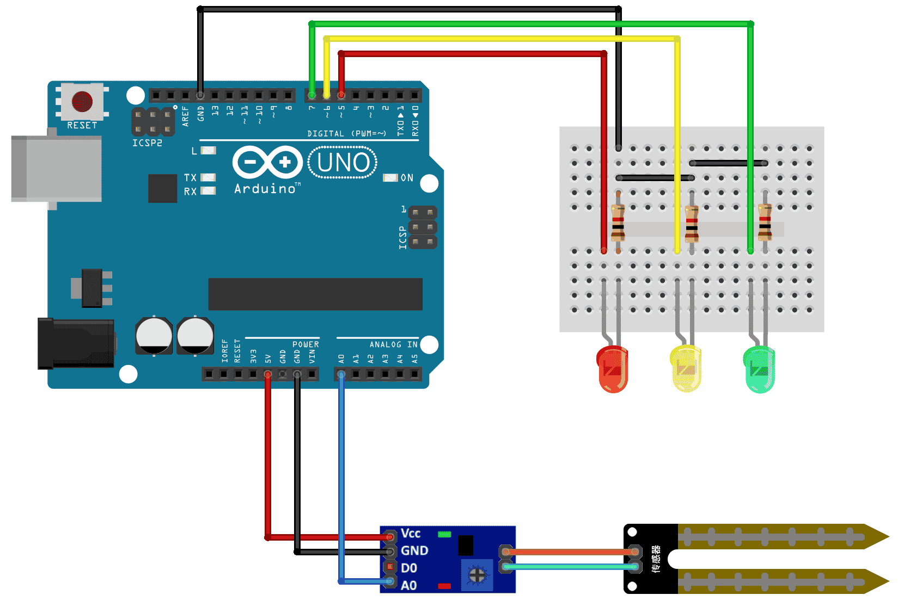
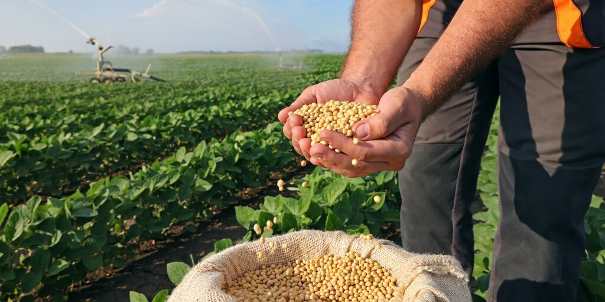
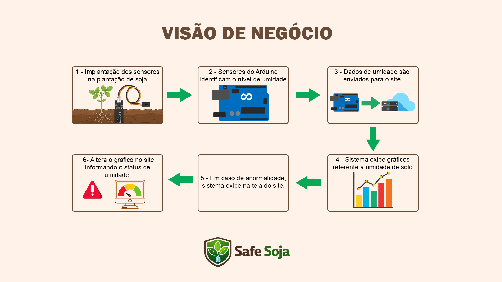

A dashboard apresenta gráficos e informações essenciais por meio do monitoramento do solo em tempo real dos níveis de umidade do terreno, apoiando decisões de cultivo.

A calculadora financeira oferece uma visão de negócio baseado em valores de consumo de recursos como água no ciclo da plantação e valores de mercado como venda e sacas vendidas.

O sistema de Arduino, composto por um sensor de umidade de solo que efetua a captura de dados do solo e emite para o sistema, exibe em tempo real na dashboard com KPIs dinâmicas.
Na SafeSoja, entendemos que o sucesso da sua lavoura depende de decisões inteligentes, então por meio da simplicidade tecnológica nós criamos uma solução que protege a sua produtividade agrária.
Diferente de sistemas complexos e de alto custo, a SafeSoja aposta na eficiência acessível com dispositivos Arduino customizados para a captura de dados da umidade de terreno. Acreditamos que o pequeno e o médio produtor também devem ter acesso a dados precisos para competir em um mercado global.


O nosso sistema monitora em tempo real, através de sensores de alta precisão, o estado de umidade do terreno da plantação, enviando alertas para a dashboard quando identifica um nível baixo ou acima do ideal de umidade.
.webp)